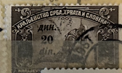
| SOURCE | TITLE| IMAGE MATCH | click to source page |
| www.ebay.com | Yugoslavia, 1922, Invalids, 3 din brown, variety "missing ... | 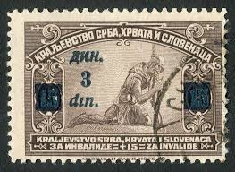 |
| www.ebay.com | Yugoslavia WW1 Wounded Soldier stamp 1918 A-13 | eBay | 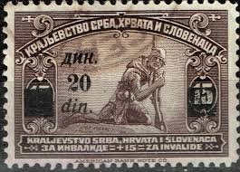 |
| www.ebay.com | 1922 Kingdom of Serbs Croats Slovenes Postage Stamp USED not ... | 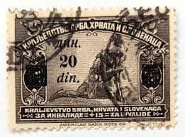 |
| www.stampcommunity.org | Curiosities From Slovenaca - Stamp Community Forum | 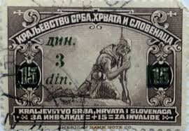 |
| www.facebook.com | Is this Yugoslavian stamp genuine? | 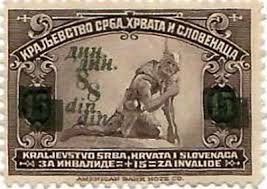 |
| worldstampsproject.org | Yugoslavia, provisional issue of 1922-1924 – World Stamps ... | 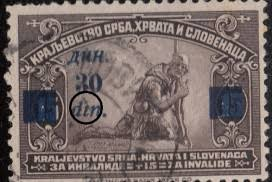 |
| www.freestampcatalogue.com | Stamps from Yugoslavia - Freestampcatalogue.com - The free ... | 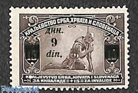 |
| colnect.com | Kingdom of Serbs, Croats and Slovenes : Stamps [Year: 1922 ... | 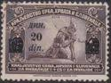 |
| www.ebay.com | YUGOSLAVIA- 2 USED STAMPS-DISABLED - ERROR, DIFERENT NUMBER ... | 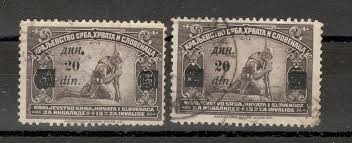 |
| www.lastdodo.com | Stamps of 1921 with overprint 3#15 (1922) - Yugoslavia ... | 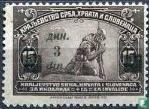 |
| www.dreamstime.com | Wounded Serbian Soldier, Issue for the Whole Kingdom Serie ... | 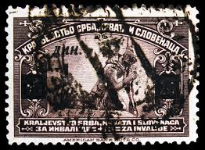 |
| en.numista.com | 50 Dinara - Yugoslavia – Numista | 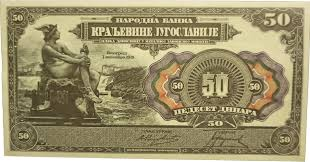 |
| www.burda-auction.com | Yugoslavia / Europe / Philately / Public Auction 70 | Burda ... | 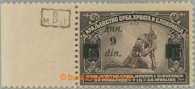 |
| www.ebay.com | YUGOSLAVIA - B2 - USED STAMP ON PIECE WITH CANCELLATION ... | 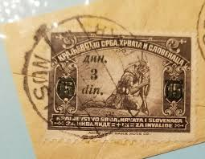 |
| notafilia-kp.com | 1 lev, 1916 | notafilia-kp.com | 106760 | paper money | 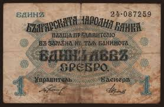 |
| www.cgbfr.com | 1 Lev Srebro BULGARIA 1920 P.030b b93_6850 Banknotes | 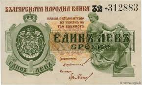 |
| en.wikipedia.org | Bulgarian lev - Wikipedia | 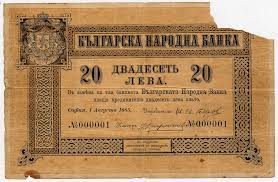 |
| www.burda-auction.com | Yugoslavia / Europe / Philately / Public Auction 74 | Burda ... | 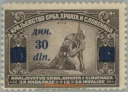 |
| katzauction.com | Bulgaria 20 Leva 1943 | Katz Auction | 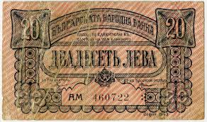 |
| www.greysheet.com | Principality of Serbia 100 динара dinars B105a,P5a 1 јул ... | 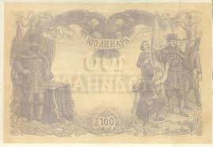 |
| www.pmgnotes.com | PMG Registry Featured Set: Bulgarian Lev | PMG | 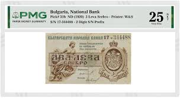 |
| www.numizon.com | Serbia 50 dinara type 1914 | Serbia - The banknote Numizon ... | 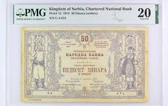 |
| katzauction.com | Yugoslavia 1000 Dinara 1920 Forgery | Katz Auction | 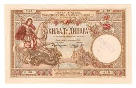 |
| www.ma-shops.com | Bulgarien 1 Lewa 1920 Bulgaria EF | MA-Shops | 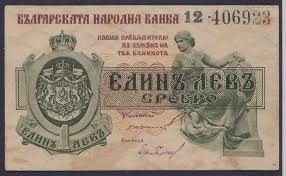 |
| www.freestampcatalogue.com | Stamps from Yugoslavia - Freestampcatalogue.com - The free ... | 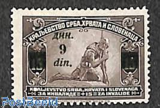 |
| en.numista.com | 5 Leva Srebro - Bulgaria – Numista | 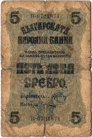 |
| notafilia-kp.com | 5 dinara / 20 kruna, 1919 | notafilia-kp.com | 98023 | paper ... | 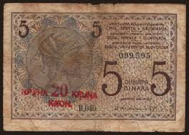 |
| www.warsendshop.com | WWII Yugoslavian 1 Dinar Note Paper Money | 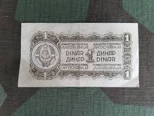 |
| commons.wikimedia.org | File:50-Dinara-1965f.jpg - Wikimedia Commons | 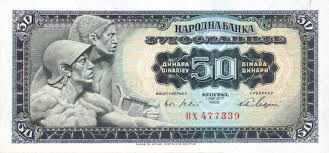 |
| journals.openedition.org | Change the regime – change the money: Bulgarian banknotes ... | 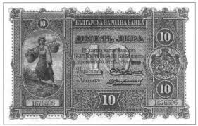 |
| www.realbanknotes.com | RealBanknotes.com > Bulgaria pA7c: 10 Leva Srebro from 1899 | 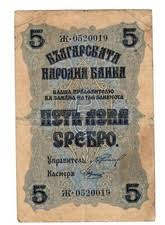 |
| www.reddit.com | Kingdom of Serbia 1905. 100 dinars : r/Banknotes | 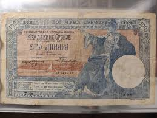 |
| www.thecoincollector.ca | Shop All – The Coin Collector | 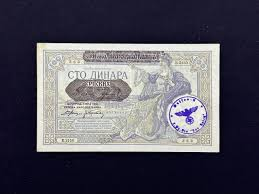 |
| www.ma-shops.com | Serbia 5 Dinara (srebru) 1916 Banknote, 1916-10-31 VF(20-25 ... | 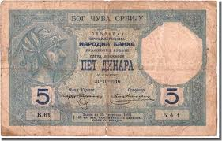 |
| singidunum-online.com | 50 DINARA (1944) partisan. REPLICA, Singidunum Numismatics | 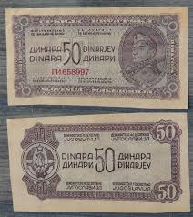 |
| www.smithwicknumismatics.com | Notes Of The German Occupation, The Serbian Goddess: 100 ... | 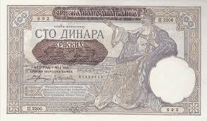 |
| www.numizon.com | Bulgaria's banknotes - The banknote Numizon catalog | 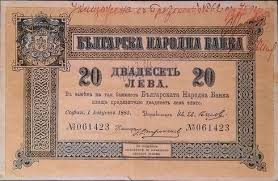 |
| www.leftovercurrency.com | 100 Serbian Dinara banknote type 1943 - Exchange yours for ... | 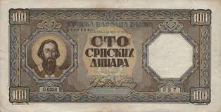 |
| www.facebook.com | Sorting out stamps from the Kingdom of Serbs, Croats and ... |  |
| colnect.com | Banknote: 20 Perpera (Montenegro(1914 Second Issue) Wor:P-11 💴 | 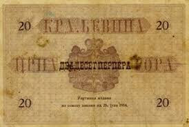 |
| www.cgbfr.com | 1000 Dinara Annulé YUGOSLAVIA 1920 P.023x 4630799 Banknotes | 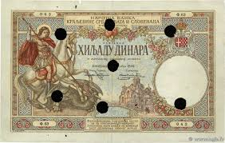 |
| singidunum-online.com | 50 DINAR REPLY 1.5.1946, Singidunum Numismatics | 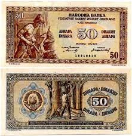 |
| www.greysheet.com | Demokratska Federativna Jugoslavija 50 dinara dinars B205a ... | 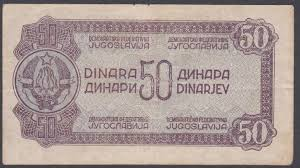 |
| www.psywarrior.com | German Propaganda Currency of WW II | 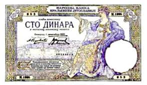 |
| www.allnumis.com | 2 Leva Srebro ND (1920), 1920 ND Silver Issue (ЛЕВА СРЕБРО ... | 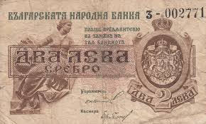 |
| www.buyhungarianstamps.com | 816-820 Yugoslavia - Serbia's First Postage Stamps, Cent ... | 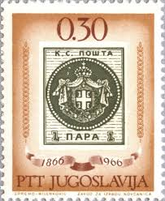 |
| www.realbanknotes.com | RealBanknotes.com > Yugoslavia p31: 100 Dinara from 1934 | 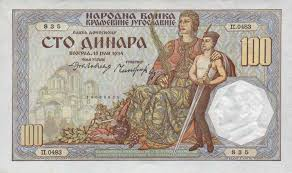 |
| katzauction.com | Serbia 50 Dinara 1876 PMG 30 NET Very Fine | Katz Auction | 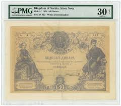 |
| www.youtube.com | The Bulgarian lev creation, inflation and denomination - YouTube | 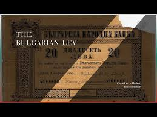 |
| en.numista.com | 5 Dinara - Yugoslavia – Numista | 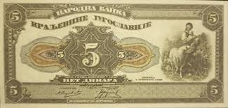 |
| notafilia-kp.com | 10 dinara, 1920 | notafilia-kp.com | 98034 | paper money | |
| www.numismaticnews.net | Australia, Canada top Long Beach sale - Numismatic News | |
| www.ebay.com | YUGOSLAVIA, YV # 148a, MNH | eBay | |
| www.instagram.com | The historical currency of Croatia is called the kuna ... | |
| www.kupindo.com | specijalitet - Kupindo.com (82501833) | |
| www.goldeneaglecoin.com | Yugoslavia 100 Dinara 1946 P#65b VG - Golden Eagle Coins | |
| www.numizon.com | Banknotes of Thrace interalliee 1919-1920 - The banknote ... | |
| www.numisnumismatics.com | 1 lev 1920 | |
| raritetdvr.ru | Петропавловск на Камчатке. АО Нихон-Моохи и К. 20 йен ... |
{kind=link}